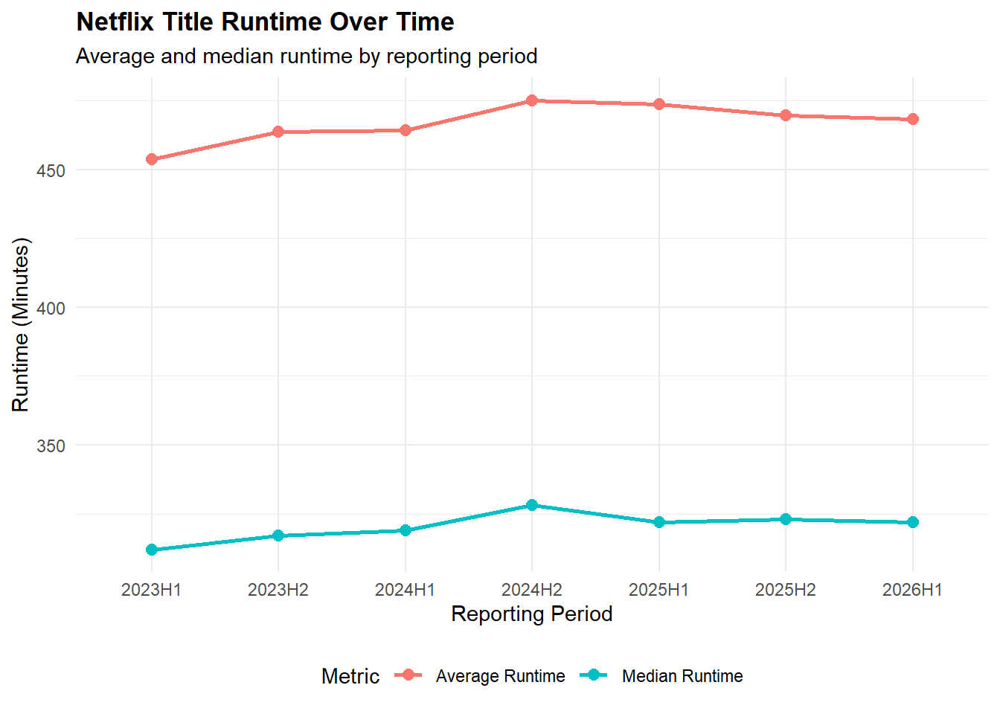
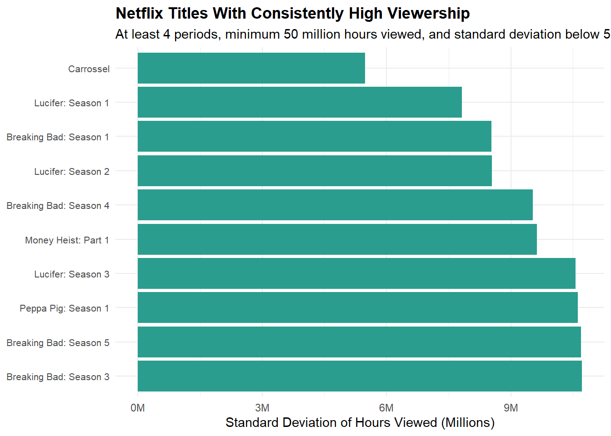
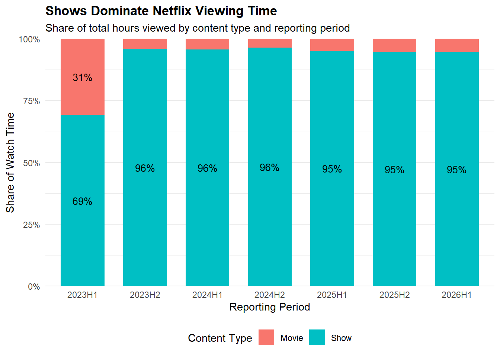

#' Acquire Netflix What We Watched Reports
#'
#' This function will acquire and standardize all data for MP#01
#' from Netflix. Because Netflix hosts the data files behind a CDN, we
#' are accessing the release pages and automatically extracting links to the
#' relevant files (with CDN hash).
#'
#' After import, files are stacked vertically and some basic cleaning is
#' performed.
#'
load_netflix_data <- function() {
library(tidyverse)
library(rvest)
library(readxl)
library(fs)
library(dplyr)
library(stringr)
library(scales)
library(gt)
data_dir <- path("data", "mp01")
if (!dir_exists(data_dir)) {
dir_create(data_dir, showWarnings = FALSE, recurse = TRUE)
}
NETFLIX_URLS <- list(
`2023H1` = "https://about.netflix.com/news/what-we-watched-a-netflix-engagement-report",
`2023H2` = "https://about.netflix.com/news/what-we-watched-the-second-half-of-2023",
`2024H1` = "https://about.netflix.com/news/what-we-watched-the-first-half-of-2024",
`2024H2` = "https://about.netflix.com/news/what-we-watched-the-second-half-of-2024",
`2025H1` = "https://about.netflix.com/news/what-we-watched-the-first-half-of-2025",
`2025H2` = "https://about.netflix.com/news/what-we-watched-the-second-half-of-2025",
`2026H1` = "https://about.netflix.com/news/what-we-watched-the-first-half-of-2026"
)
download_if_needed <- function(url, local) {
if (!file_exists(local)) {
download.file(url, local, quiet = TRUE, mode = "wb")
}
return(local)
}
NETFLIX_URLS |>
map(read_html) |>
map(html_element, xpath = "//a[contains(@href, '.xlsx')]") |>
map_chr(html_attr, "href") |>
enframe("period", "url") |>
mutate(
path = path(data_dir, paste0(period, ".xlsx")),
path = map2(url, path, download_if_needed),
data = map(path, read_excel, skip = 3, na = "*"),
data = map(
data,
\(x) x |>
mutate(`Release Date` = as.Date(`Release Date`))
)
) |>
unnest(data) |>
select(-url, -path) |>
mutate(
year = str_sub(period, 1, 4),
half = str_sub(period, start = 6),
period_start = make_date(
year, if_else(half == "1", 1, 7), 1
),
period_end = make_date(
year,
if_else(half == "1", 6, 12),
if_else(half == "1", 30, 31)
)
) |>
filter(!is.na(`Hours Viewed`)) |>
mutate(
live_event = !is.na(Runtime) &
str_detect(Runtime, "\\d+:\\d+\\*"),
clean_time = str_remove(Runtime, fixed("*")),
Runtime = 60 * hour(hm(clean_time)) +
minute(hm(clean_time))
) |>
select(-clean_time) |>
mutate(
Runtime = coalesce(
Runtime, mean(Runtime, na.rm = TRUE)
),
.by = Title,
Title = stringi::stri_trans_general(Title, "Latin-ASCII"),
Title = str_remove(Title, " // .*"),
Title = str_remove(Title, "[^[:ascii:]].*"),
Title = str_trim(Title)
) |>
filter(Title != "") |>
select(
year,
period,
period_start,
period_end,
Title,
-half,
Runtime,
Views,
`Hours Viewed`,
`Release Date`,
`Available Globally?`,
live_event
) |>
rename(
title = Title,
runtime = Runtime,
views = Views,
hours_viewed = `Hours Viewed`,
release_date = `Release Date`,
available_globally = `Available Globally?`
) |>
mutate(
year = as.integer(year),
available_globally = available_globally == "Yes"
)
}Mini Project 1: What We Watched: Exploring Netflix Viewing Data
Introduction:
This report examines the data from Netflix’s What We Watched Reports from 2023 to 2026. The goal of this report is to identify viewing trends and patterns to drive 2027 content recommendations for Netflix.
Data Preparation:
The following function was used to download the various What We Watched reports, each covering a six-month period to provide year over year comparisons across Netflix content.
The function also persoms data cleaning and preparation, including addressing missing values, creating consistent variable types, and setting the data set up in a structure that’s easy to analyze.
NETFLIX_DATA <- load_netflix_data()── Attaching core tidyverse packages ──────────────────────── tidyverse 2.0.0 ──
✔ dplyr 1.2.1 ✔ readr 2.2.0
✔ forcats 1.0.1 ✔ stringr 1.6.0
✔ ggplot2 4.0.3 ✔ tibble 3.3.1
✔ lubridate 1.9.5 ✔ tidyr 1.3.2
✔ purrr 1.2.2
── Conflicts ────────────────────────────────────────── tidyverse_conflicts() ──
✖ dplyr::filter() masks stats::filter()
✖ dplyr::lag() masks stats::lag()
ℹ Use the conflicted package (<http://conflicted.r-lib.org/>) to force all conflicts to become errors
Attaching package: 'rvest'
The following object is masked from 'package:readr':
guess_encoding
Attaching package: 'scales'
The following object is masked from 'package:purrr':
discard
The following object is masked from 'package:readr':
col_factorInitial EDA Pass
The following is done to check the initial structure and provide a glimpse into the data set, allowing for a better understanding of the data prior to starting analysis. This provides insight into important summary statistics for all variables in the data set.
Checking the Data Structure:
glimpse(NETFLIX_DATA)Rows: 61,892
Columns: 11
$ year <int> 2023, 2023, 2023, 2023, 2023, 2023, 2023, 2023, 202…
$ period <chr> "2023H1", "2023H1", "2023H1", "2023H1", "2023H1", "…
$ period_start <date> 2023-01-01, 2023-01-01, 2023-01-01, 2023-01-01, 20…
$ period_end <date> 2023-06-30, 2023-06-30, 2023-06-30, 2023-06-30, 20…
$ title <chr> "The Night Agent: Season 1", "Ginny & Georgia: Seas…
$ runtime <dbl> 491, 587, 856, 409, 389, 497, 2703, 533, 548, 428, …
$ views <dbl> NA, NA, NA, NA, NA, NA, NA, NA, NA, NA, NA, NA, NA,…
$ hours_viewed <dbl> 812100000, 665100000, 622800000, 507700000, 5030000…
$ release_date <date> 2023-03-23, 2023-01-05, 2022-12-30, 2022-11-23, 20…
$ available_globally <lgl> TRUE, TRUE, TRUE, TRUE, TRUE, TRUE, FALSE, TRUE, TR…
$ live_event <lgl> FALSE, FALSE, FALSE, FALSE, FALSE, FALSE, FALSE, FA…Summary Statistics:
library(skimr)
skim(NETFLIX_DATA)| Name | NETFLIX_DATA |
| Number of rows | 61892 |
| Number of columns | 11 |
| _______________________ | |
| Column type frequency: | |
| character | 2 |
| Date | 3 |
| logical | 2 |
| numeric | 4 |
| ________________________ | |
| Group variables | None |
Variable type: character
| skim_variable | n_missing | complete_rate | min | max | empty | n_unique | whitespace |
|---|---|---|---|---|---|---|---|
| period | 0 | 1 | 6 | 6 | 0 | 7 | 0 |
| title | 0 | 1 | 1 | 217 | 0 | 24427 | 0 |
Variable type: Date
| skim_variable | n_missing | complete_rate | min | max | median | n_unique |
|---|---|---|---|---|---|---|
| period_start | 0 | 1.00 | 2023-01-01 | 2026-01-01 | 2024-01-01 | 7 |
| period_end | 0 | 1.00 | 2023-06-30 | 2026-06-30 | 2024-06-30 | 7 |
| release_date | 35251 | 0.43 | 2010-04-01 | 2026-06-29 | 2021-06-17 | 2487 |
Variable type: logical
| skim_variable | n_missing | complete_rate | mean | count |
|---|---|---|---|---|
| available_globally | 2 | 1 | 0.35 | FAL: 40171, TRU: 21719 |
| live_event | 0 | 1 | 0.01 | FAL: 61582, TRU: 310 |
Variable type: numeric
| skim_variable | n_missing | complete_rate | mean | sd | p0 | p25 | p50 | p75 | p100 | hist |
|---|---|---|---|---|---|---|---|---|---|---|
| year | 0 | 1.00 | 2024.11 | 1.08 | 2023 | 2023 | 2024 | 2025 | 2026 | ▇▅▁▅▂ |
| runtime | 13085 | 0.79 | 467.35 | 694.71 | 2 | 210 | 320 | 545 | 23853 | ▇▁▁▁▁ |
| views | 18198 | 0.71 | 1375241.45 | 3630933.22 | 100000 | 100000 | 400000 | 1200000 | 144800000 | ▇▁▁▁▁ |
| hours_viewed | 0 | 1.00 | 8265858.27 | 24924226.03 | 100000 | 500000 | 1800000 | 6400000 | 964100000 | ▇▁▁▁▁ |
Initial Observations:
- Basic Structure:
- The Netflix data set includes a total of 61,892 rows and 11 columns, which covers quarterly periods from 2023 to 2026.
- The data set contains 24,427 unique show and movie titles with release dates ranging from 2010-04-01 to 2026-06-29.
- Other columns indicate if a title is available globally or was a live event on Netflix.
- Trends:
- The average runtime, views, and hours viewed for all titles is approximately 467 minutes, 1,375,241.45 views, and 8,265,858.27 hours, respectively. When compared to median values, the averages are substantially higher. This gives an initial suggestion that these distributions are more heavily right skewed, and that certain titles may received much more views than others.
Exploratory Questions - Inline Values
Q1. What date range is covered by this data set?
# 1. Date range
date_start <- min(NETFLIX_DATA$period_start, na.rm = TRUE)
date_end <- max(NETFLIX_DATA$period_end, na.rm = TRUE)- The data set covers the period from January,01, 2023 through June, 30, 2026.
Q2. How many different shows and movies are covered in this data set?
# 2. Number of unique titles
n_titles <- n_distinct(NETFLIX_DATA$title)- The dataset contains 24,427 unique show & movie titles.
Q3. How many total hours have been spent watching shows from the Bridgerton universe?
# 3. Total hours viewed for the Bridgerton universe
bridgerton_hours <- NETFLIX_DATA |>
filter(str_detect(title, regex("Bridgerton", ignore_case = TRUE))) |>
summarise(total = sum(hours_viewed, na.rm = TRUE)) |>
pull(total)- A total of 4,862,800,000 hours have been spent watching titles in the Bridgerton Universe.
Q4. How many total hours have been spent watching the five seasons of Stranger Things?
# 4. Total hours viewed for the five Stranger Things seasons
stranger_things <- NETFLIX_DATA |>
filter(str_detect(title, regex("Stranger Things", ignore_case = TRUE))) |>
filter_out(str_detect(title, regex("Beyond Stranger Things",
ignore_case = TRUE))) |>
filter_out(str_detect(title, regex("Tales from", ignore_case = TRUE))) |>
filter_out(str_detect(title, regex("Fireplace", ignore_case = TRUE)))
stranger_things_hours <- stranger_things |>
summarise(total = sum(hours_viewed, na.rm = TRUE)) |>
pull(total)- A total of 5,548,500,000 hours have been spent watching five seasons of Stranger Things, excluding the companion shows & background music.
Q5. What percentage of total watch time was spent on the Top 10 titles in 2026H1?
# 5. Percentage of watch time spent on the Top 10 titles in 2026H1
data_2026H1 <- NETFLIX_DATA |>
filter(period == "2026H1")
top10_share <- data_2026H1 |>
slice_max(order_by = hours_viewed, n = 10, with_ties = FALSE) |>
summarise(share = sum(hours_viewed) /
sum(data_2026H1$hours_viewed)) |>
pull(share)- The top 10 titles in the 2026H1 reportings period accounted for 6.70% of total watch time.
Q6. What fraction of Netflix’s catalog is globally available?
# 6. Global availability in the most recent reporting period
catalog_2026H1 <- data_2026H1 |>
group_by(title) |>
summarise(
available_globally = if (all(is.na(available_globally))) {
NA
} else {
any(available_globally %in% TRUE)
},
hours_viewed = sum(hours_viewed, na.rm = TRUE),
.groups = "drop"
) |>
filter(!is.na(available_globally))
global_title_share <- mean(catalog_2026H1$available_globally)
global_hours_share <- catalog_2026H1 |>
summarise(
share = sum(hours_viewed[available_globally]) /
sum(hours_viewed)
) |>
pull(share)- In the 2026H1 period, 38.21% of titles with known availability status were globally available. When weighted by hours viewed, globally available titles accounted for 49.11% of total watch times among titles with known availability status.
Exploratory Questions - Table Answers
Q1. What was the top title (by total hours viewed) in each period and what fraction of total viewership did it capture?
| Top Netflix Titles by Reporting Period | |||
| Reporting Period | Top Title | Hours Viewed | Share of Total Viewership |
|---|---|---|---|
| 2023H1 | The Night Agent: Season 1 | 812,100,000 | 0.87% |
| 2023H2 | King the Land: Limited Series | 630,200,000 | 0.97% |
| 2024H1 | Bridgerton: Season 3 | 733,800,000 | 1.08% |
| 2024H2 | Squid Game: Season 2 | 619,900,000 | 0.91% |
| 2025H1 | Squid Game: Season 2 | 840,300,000 | 1.18% |
| 2025H2 | Wednesday: Season 2 | 964,100,000 | 1.35% |
| 2026H1 | Bridgerton: Season 4 | 889,800,000 | 1.20% |
This table displays the top titles in each period based on total hours viewed, along with it’s percentage of total viewership.
In the first reporting period,The Night Agent: Season 1 was the top title, with 812 hours (accounting for 0.87% of total viewership).
Over the three most recent reporting periods, the top titles have attracted record number of viewing hours with 2025H1, 2025H2 & 2026H1 ranking in 840 million and 964 million hours. Their share of total vieweing hours ranged from approximately 1.18% to 1.35%.
This suggests that the most popular titles in later periods have captured larger shares of overall viewership than top titles in earlier periods.
Q2. How has Netflix’s catalog changed in size over the periods for which we have questions? You should consider both the number of titles and the total run time of content.
| Netflix Catalog Size and Runtime Over Time | ||||
| Reporting Period | Number of Titles | Total Runtime (Hours) | Average Runtime (Minutes) | Median Runtime (Minutes) |
|---|---|---|---|---|
| 2023H1 | 18,126 | 43,717.0 | 453.7 | 312.0 |
| 2023H2 | 6,574 | 50,116.7 | 463.7 | 317.0 |
| 2024H1 | 6,775 | 51,774.5 | 464.1 | 319.0 |
| 2024H2 | 6,854 | 53,614.8 | 475.1 | 328.0 |
| 2025H1 | 7,473 | 58,373.9 | 473.6 | 322.0 |
| 2025H2 | 7,712 | 59,714.0 | 469.7 | 323.0 |
| 2026H1 | 8,163 | 62,854.9 | 468.3 | 322.0 |

Above are two charts displaying Netflix’s catalog details across reporting periods. The number of titles increased from 6,574 in 2023H2 to 8,163 in 2026H1.
Across the recording periods, total run time for all titles also increased from around 50,117 to 62,855 hours. However, the average run time remained relatively stable fluctuating between 454 to 475 minutes, while the median increased from 317 to 322 minutes.
This trend suggests that the increase in total run time is primarily due to the increase in the number of titles rather than titles growing in run time length.
It is worth noting 2023H1 has a very high title count, but approximately 12,415 of these titles are missing run time and are excluded in the calculations of total, average & median run time.
Q3. Which titles have had the most consistently high viewership across all periods? These shows are likely to be ‘staples’ that viewers fall back on as ‘comfort food’, e.g., re-runs of Friends.
| Netflix Titles With Consistently High Viewership | ||||
| At least 4 periods, minimum 50 million hours viewed, and standard deviation below 50 million | ||||
| Title | Periods Appeared | Average Hours Viewed | Minimum Hours Viewed | Standard Deviation |
|---|---|---|---|---|
| Carrossel | 7 | 65,485,714 | 56,600,000 | 5,480,398 |
| Lucifer: Season 1 | 7 | 69,128,571 | 60,000,000 | 7,825,538 |
| Breaking Bad: Season 1 | 7 | 66,314,286 | 56,200,000 | 8,534,524 |
| Lucifer: Season 2 | 7 | 69,671,429 | 59,300,000 | 8,547,849 |
| Breaking Bad: Season 4 | 7 | 74,157,143 | 65,000,000 | 9,534,649 |
| Money Heist: Part 1 | 7 | 80,571,429 | 73,100,000 | 9,627,515 |
| Lucifer: Season 3 | 7 | 82,457,143 | 70,200,000 | 10,560,123 |
| Peppa Pig: Season 1 | 7 | 68,814,286 | 51,700,000 | 10,616,250 |
| Breaking Bad: Season 5 | 7 | 84,114,286 | 74,900,000 | 10,690,249 |
| Breaking Bad: Season 3 | 7 | 81,971,429 | 70,900,000 | 10,717,076 |

The charts above show titles with consistently high viewership across all available periods. To identify titles, I filtered for titles that have appeared in at least 4 periods, had a minimum of 50M hours viewed, and a standard deviation below 50M hours. The results were then sorted by lowest standard deviation.
Several titles had sustained popularity, particularly titles with multiple seasons:
- Lucifer: Season 1 was the series with the lowest standard deviation of about 7.8 while having at least 59.3 hours in each period. Breaking Bad: Season 1 had a low standard deviation of 8.5 hours while having at least 56.2 hours in every period.
Multiple seasons of Breaking Bad, Lucifer, and Money Heist met this criteria and were in the top 10, suggesting these fan favorite or comfort shows maintain substantial viewership overtime.
Q4. Within each period, what fraction of time was spent on ‘shows’ vs movies?

The bar chart below displays the share of total hours by content type accross all reporting periods.
In the first reporting period, movies made accounted for 31% of viewing time. However, from 2023H2 onward, shows maintained 95% to 96% of the total hours viewed, while movies represented the remaining share.
This suggests that shows account for the vast majority of viewing time on Netflix, with movies making up a small share of viewing time.
Note: For this analysis, titles containing “Season” or with a run time of over 240 minutes received a classification of shows.
Q5. How does the performance of live events compare to pre-taped content? Does the average live event draw more viewership than an average piece of pre-taped content? How about a ‘top tier’ live event vs ‘top tier’ pre-taped content?
| Viewership: Live Events vs. Pre-taped Content | ||||
| Content Type | Number of Records | Average Hours Viewed | Median Hours Viewed | Top 10% Average Hours |
|---|---|---|---|---|
| Live Event | 310 | 3,560,000 | 1,700,000 | 15,582,857 |
| Pre-taped | 61582 | 8,289,547 | 1,800,000 | 53,413,017 |
The charts below show that pre-taped content averages approximately 2.3 times as many hours viewed as live events on Netflix.
Median viewership is relatively smaller than the average for the two content types. Pre-taped content has a median of 1.80 hours, compared to 1.70 for live events.
The difference is much more noticeable among top tier content. The top 10% of pre-taped titles averages 53.41 hours viewed compared to 15.58 hours for live events.
Since the average is much higher than the median for pre-taped content, this suggests that a smaller number of highly viewed titles may be responsible for rasing the overall average, rather than all pre-taped content having higher viewership.
Corporate Strategy Memo
Our analysis indicates that shows accounted for 95%–96% of total viewing hours from 2023H1 to 2026H1, compared with just 4%–5% for movies.
Netflix should prioritize shows with strong viewership potential, including fan favorites and comfort shows that encourage repeat viewing, while investing in new series and selectively accuring promising movies.
The analysis also found new releases grew from 32.2% to 37.1%, over the same period demonstrating their that new titles are increasing contribution to audience engagement.
However, existing titles still represented 62.9% of viewing in 2026H1. Netflix should maintain a steady pipeline of new content while promoting and retaining popular catalog titles. Budget decisions should consider viewership alongside content costs and subscriber data.
NoteAI Usage Statement
ChatGPT was used to help write the code in this project, but all non-code text was generated without the use of any Generative AI tools. Additionally, ChatGPT was used to provide additional background information on the topic and to brainstorm ideas for the final open-ended prompt.